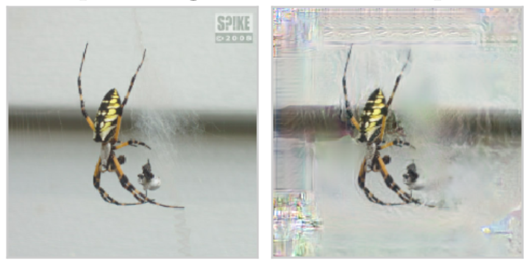
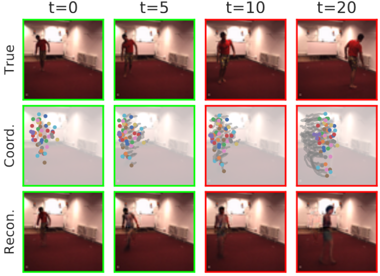
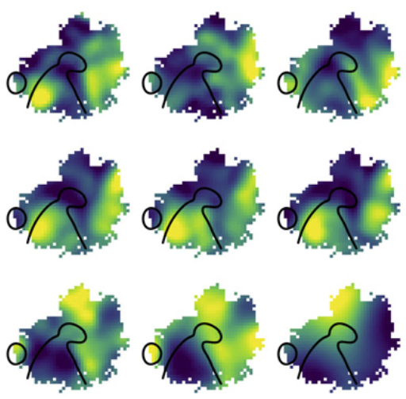
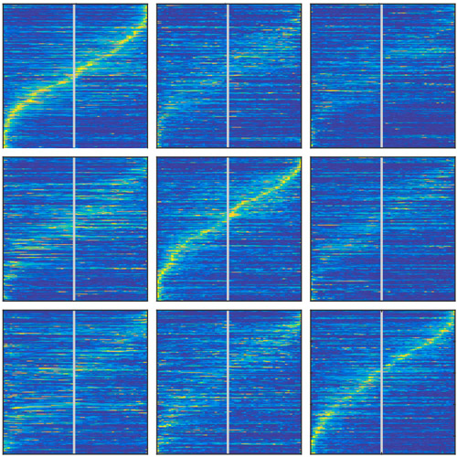
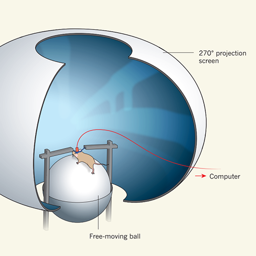
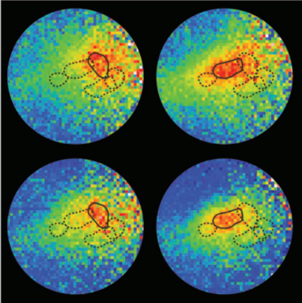

|
Research
I'm interested in visual representation learning, specifically how to impart abstract structure and inductive biases to the representations learned by deep neural network to make them more useful, interpretable, and robust.
|
|

|
Automatic Shortcut Removal for Self-Supervised Representation Learning
Matthias Minderer, Olivier Bachem, Neil Houlsby, Michael Tschannen
Preprint, 2020
We tackle the problem of low-level shortcuts in self-supervised learning by training an adversarial "lens" to remove shortcut features from images.
|
|

|
Unsupervised Learning of Object Structure and Dynamics from Videos
Matthias Minderer, Chen Sun, Ruben Villegas, Kevin Murphy, Honglak Lee
NeurIPS, 2019
By using a spatially structured (keypoint-based) image representation, we improve video prediction quality and the usefulness of the learned video representations.
|
|

|
The Spatial Structure of Neural Encoding in Mouse Posterior Cortex during Navigation
Matthias Minderer, Kristen Brown, Christopher Harvey
Neuron, 2019
Using large-scale neural recordings and deep models of neural encoding, we show that navigation-related information is distributed and varies gradually across large parts of the posterior cortex, even across retinotopic boundaries.
|
|

|
Dynamic Reorganization of Neuronal Activity Patterns in Parietal Cortex
Laura Driscoll, Noah Pettit, Matthias Minderer, Selmaan Chettih, Christopher Harvey
Cell, 2017
Contrary to the idea that representations of sensory stimuli or the activity patterns that accompany motor actions are stable, neuronal representations in the parietal cortex can change across days, possibly allowing for the tradeoff between stable encoding of information and flexibility for incorporating new information.
|
|

|
Neuroscience: Virtual reality explored
Matthias Minderer, Christopher Harvey, Flavio Donato, Edvard Moser
Nature, 2016
We discuss the advantages of using virtual reality to study sensorimotor representations in the brain.
|
|

|
Chronic imaging of cortical sensory map dynamics using a genetically encoded calcium indicator
Matthias Minderer, Wenrui Liu, Lazar Sumanovski, Sebastian Kügler, Fritjof Helmchen, David Margolis
J Phys, 2012
We present a method for fast fluorescence imaging of map-level cortical activity using a calcium indicator protein. Sensory-evoked neuronal activity can be imaged repeatedly in the same mouse over weeks, enabling new opportunities for the longitudinal study of cortical function and dysfunction.
|
|
{kind=link}